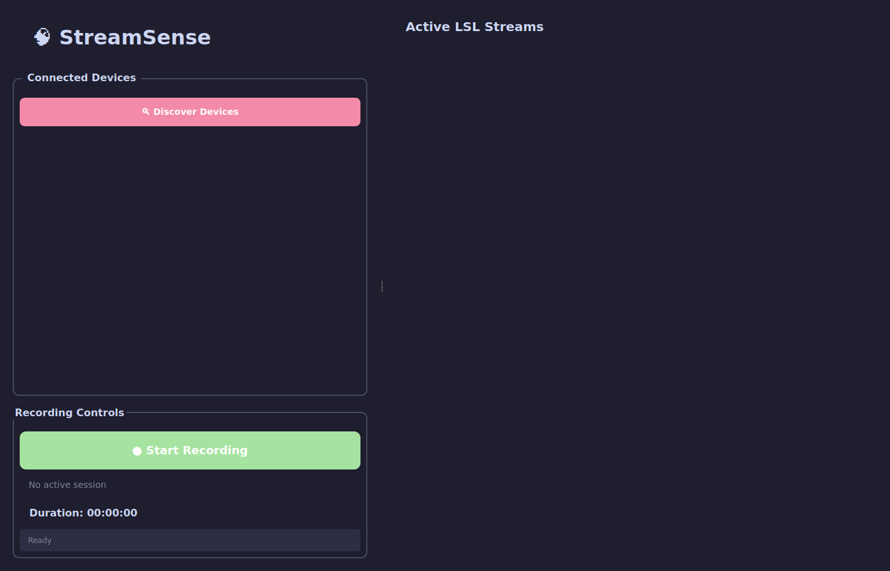
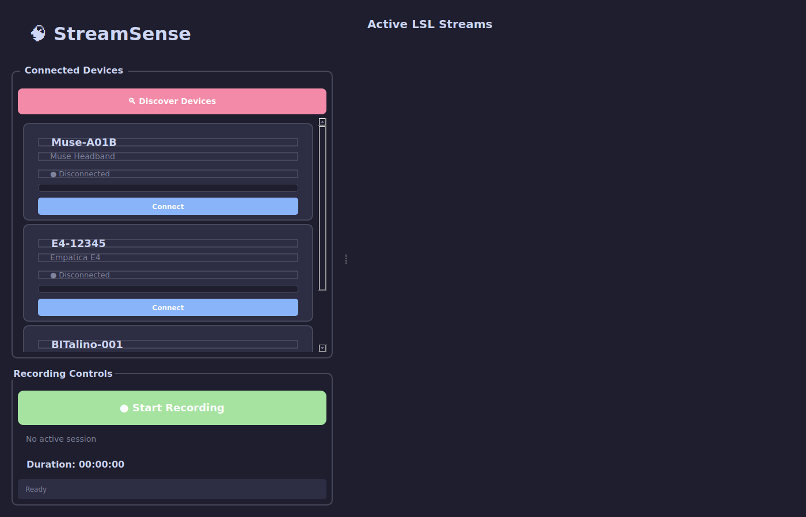
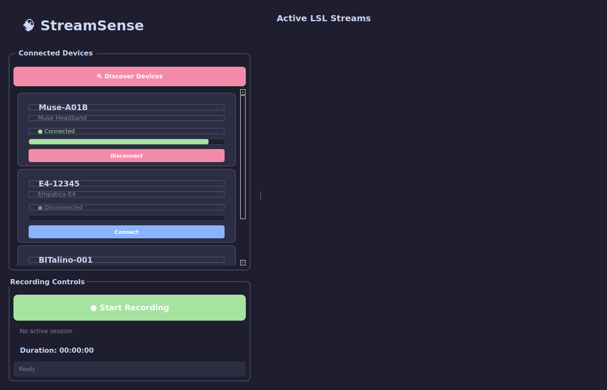
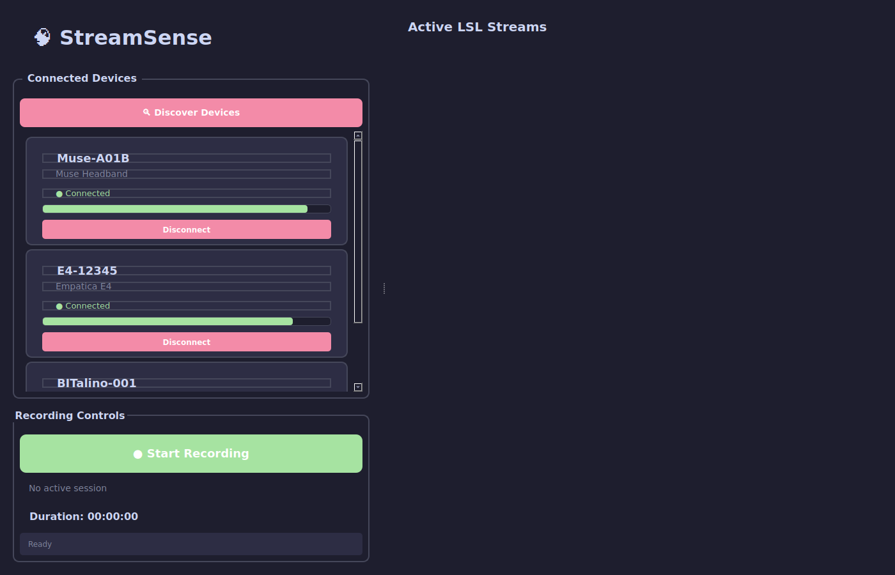
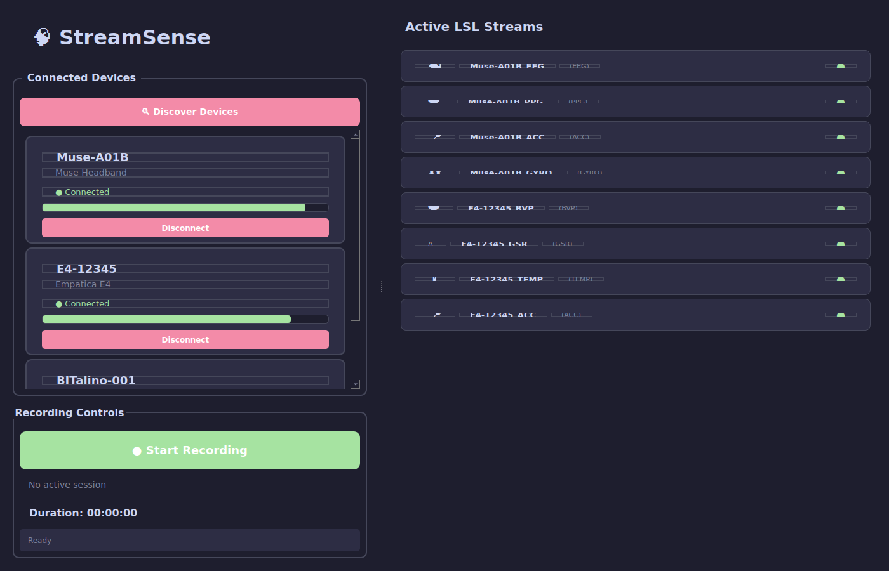
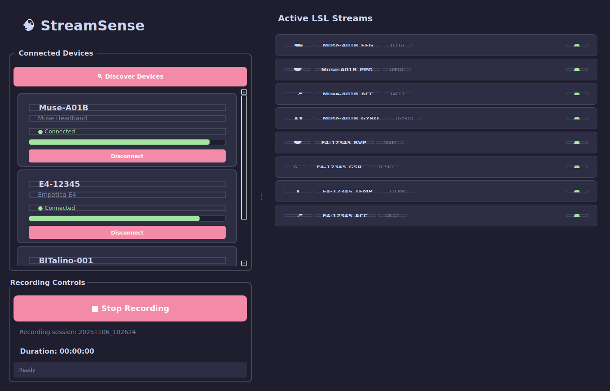
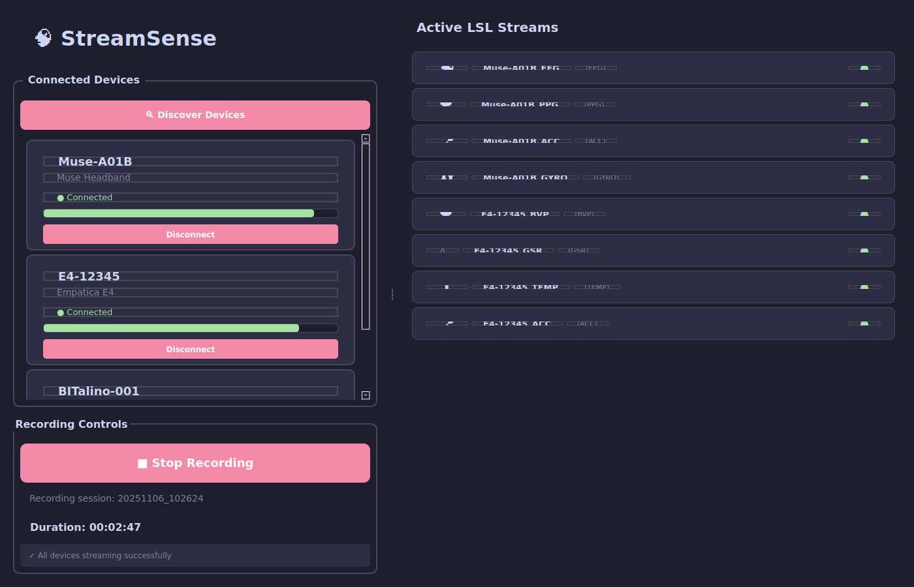

🧠 StreamSense Screenshots Test
If you can see the screenshots below, they're working!

1. Initial State - Clean UI

2. Devices Discovered - Three devices found

3. Device Connected - Muse with signal quality

4. Multiple Devices - Two devices streaming

5. LSL Streams Active - Eight live streams

6. Recording Active - Session in progress

7. Recording Duration - With live timer
8. Status Feedback - Real-time messages

9. Full Overview - Complete UI
10. Device Cards - Connection controls
Open this file in your browser: test_screenshots.html
If you see dark-themed UI screenshots above, they're working! 🎉